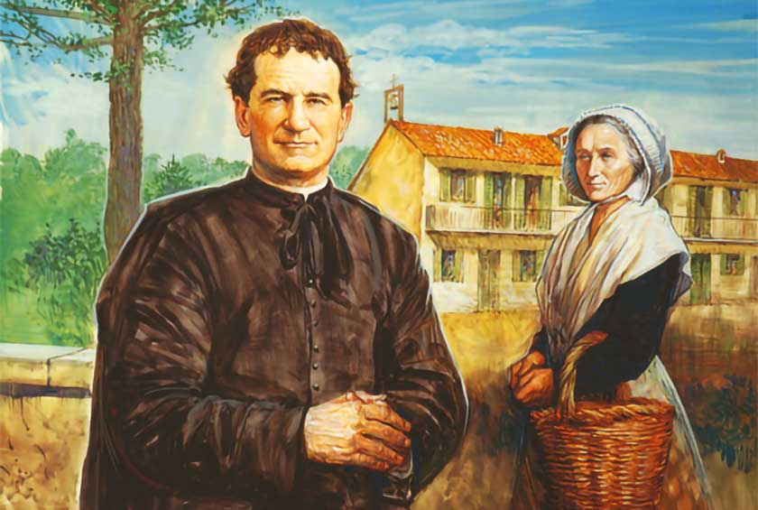
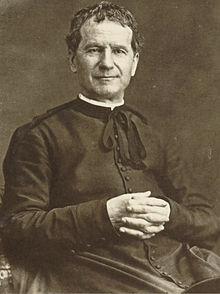

"In his life the supernatural became the natural and the extraordinary the ordinary." So spoke Pope Pius XI of the beloved Don Bosco, renowned for his educational pioneering and his affectionate care for the fatherless. Born Giovanni Melchior Bosco in 1815,  the future saint was the youngest son of a peasant farmer in the hamlet of Becchi, in the Piedmont district of north Italy. He lost his father at the age of two and was brought up by a devoted and industrious mother, Margaret Bosco, who had a hard struggle maintaining the home and the three children, all of them boys. A dream that little Giovanni had at the age of nine revealed to him his vocation. He seemed to be surrounded by a mob of fighting and swearing children whom he tried in vain pacify, at first by arguments and then by hitting them. Suddenly there appeared a mysterious woman who said: "Softly, softly...if you wish to win them! Take your shepherd's staff and lead them to pasture." Even as she spoke, the children were transformed first into wild beasts and then into gentle lambs. From that time on, the boy thought, it was his clear duty to lead and help other boys.
He began with those of his own village, teaching them the Catechism and bringing them to church. As an inducement, he would amuse them first with acrobatic and conjuring tricks, at which he became very clever. One Sunday morning when an itinerant juggler and gymnast was holding the children spellbound by his performance, young John challenged him to a competition and beat him at his own tricks. Then he marched off to church, followed by his admiring audience. It was more or less by chance that this talented boy learned to read. He was staying with an aunt who was servant to the priest, and when the priest was told of John's ambition, he taught him gladly. But John didn't want to stop with reading and writing; he wished to study for the priesthood. Many difficulties had to be overcome before he could even begin his preliminary studies. When, at sixteen, he entered the seminary at Chieri, he was so poor that money for his maintenance and his clothes had to be supplied by charity. The village mayor contributed a hat, one friendly person gave him a  and another a pair of shoes. People were eager to help a boy who was himself so eager and ambitious. After his ordination as deacon, he attended the theological school at nearby Turin, finding time to continue his volunteer work with homeless or neglected boys. Having won the approbation of his superiors for what he was doing, he began to gather around him regularly on Sunday afternoons a band of these waifs and young apprentices.
After taking Holy Orders, his first appointment was assistant chaplain of a home for girls, founded by the Marchesa Barolo, a wealthy and philanthropic woman. This post left Don Bosco free on Sundays to devote himself to his group of boys. He set up for them a sort of combined Sunday School and recreation center on grounds belonging to the Marchesa, which he called "the festive Oratory." But the Marchesa quickly withdrew her permission, because the boys were, naturally, noisy and unruly, and sometimes even made so bold as to pick the flowers in the garden. For more than a year the group was regarded as a nuisance and sent from pillar to post. No property owner was able to put up with them for long. When at last Don Bosco was able to hire an old shed as a meeting place, and the future seemed promising, the Marchesa delivered herself of an ultimatum. He must choose between giving up the boys-who now numbered several hundred or resigning his post at the girl's orphanage. Don Bosco promptly resigned, to devote himself wholly to the boys.
In the midst of these anxieties, he was prostrated by a severe attack of pneumonia that came near ending his life. As soon as he had recovered, he went to live in some poor rooms adjoining a new Oratory, or gathering place, with his mother as housekeeper. For ten years this good woman served as his adjutant and loyal helper, extending her motherly care over all the waifs and strays her son brought to her. Don Bosco now applied himself to consolidating his work and planning for his maintenance and his clothes had to be supplied by charity. The village mayor contributed a hat, one friendly person gave him a cloak, and another a pair of shoes. People were eager to help a boy who was himself so eager and ambitious. After his ordination as deacon, he attended the theological school at nearby Turin, finding time to continue his volunteer work with homeless or neglected boys. Having won the approbation of his superiors for what he was doing, he began to gather around him regularly on Sunday afternoons a band of these waifs and young apprentices.
Video courtesy of Catholic Online.